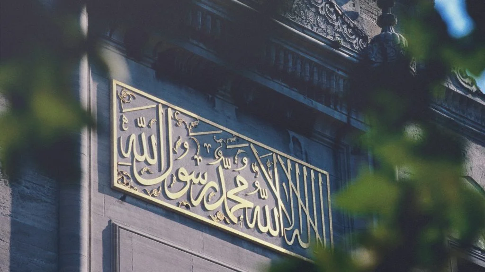
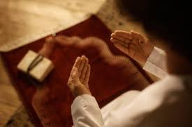
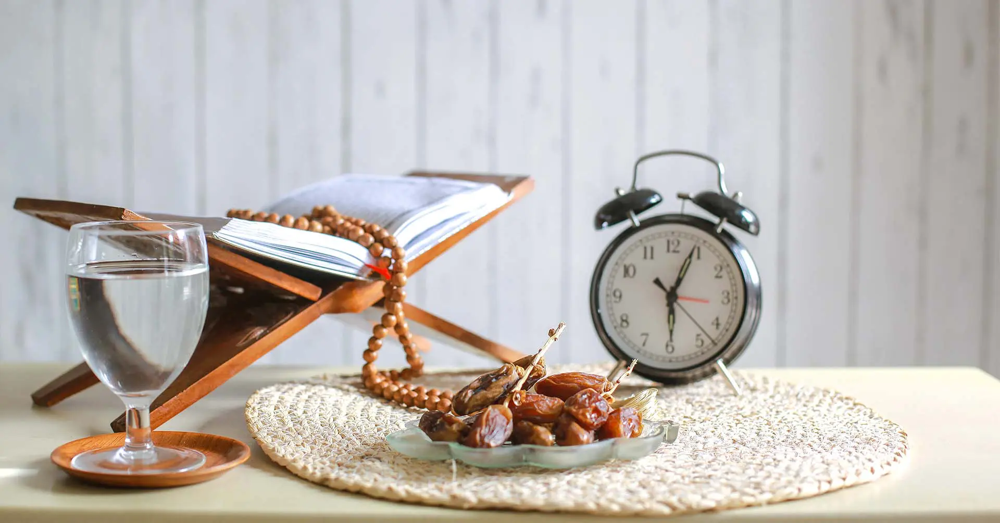

About Us
Insha'Allah is an Islamic knowledge and guidance platform dedicated to spreading authentic Islamic teachings, moral values, and positive messages. Our goal is to encourage good deeds, promote peace, and help people live a life guided by faith, honesty, and compassion.
Core Islamic Knowledge: The Five Pillars of Islam
The foundation of Islam is built upon five essential pillars. These are the basic acts of worship that guide a Muslim’s faith and actions.
1. Shahadah (Faith)
The declaration of faith: believing that there is no god except Allah and that Muhammad (ﷺ) is the Messenger of Allah.
2. Salah (Namaz)
Performing the five daily prayers to maintain a direct connection with Allah and seek guidance and discipline.
3. Zakah (Charity)
Giving a portion of wealth to those in need to purify wealth and support social equality.

4. Sawm (Roza)
Fasting during the month of Ramadan to develop self-control, patience, and empathy for the poor.
5. Hajj (Pilgrimage)
Performing pilgrimage to Makkah at least once in a lifetime, if physically and financially able.

Good Deeds: What We Should Do
- Speak the truth and act with honesty
- Show kindness to parents, neighbors, and humanity
- Help the poor, orphans, and those in need
- Seek knowledge and spread beneficial wisdom
- Protect the environment and respect all living beings
What We Should Avoid
- Lying, cheating, and injustice
- Harming others physically or verbally
- Spreading hatred, false news, or corruption
- Disrespecting parents and elders
- Wasting resources and damaging nature
Our Vision for a Safe and Peaceful World
Islam teaches peace, mercy, and justice. Through spreading correct knowledge, encouraging good character, and avoiding harmful actions, we aim to contribute to a safer, kinder, and more ethical world for everyone.